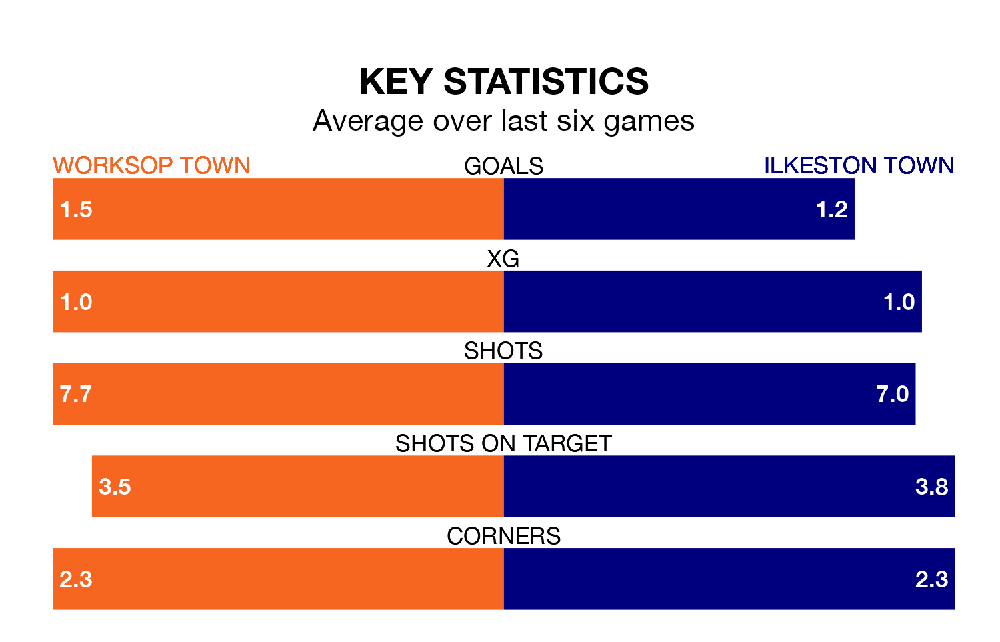

Worksop Town host Ilkeston Town on Saturday at the Windsor Food Service Stadium in Northern Premier League.
In their last league match, on January 6, Worksop beat Whitby Town 1-0 at home.
Ilkeston also won, 2-0 at home against United of Manchester.
With 52 goals in 24 games so far this season, Worksop are the league's joint-second-highest scorers with 2.2 goals per game. And they are conceding fewer than average, letting in 26 goals at a rate of 1.1 per game.
Ilkeston, meanwhile, are average scorers, with 1.6 goals per game. They have conceded 1.5 goals per game.
Worksop Town are third in the table after 24 games, of which they have won 13 and drawn five, earning 44 points.
Ilkeston Town are nine places behind the home side in 12th, with 11 wins and three draws putting them on 36 points.
Worksop are in reasonable form in Northern Premier League, with three wins and two draws from their last six games.
With three wins and three losses over that period, the visitors' form is slightly worse – they have taken nine points from 18, compared to Worksop's 11.
Updated: 13:38 (UTC), 10/01/24